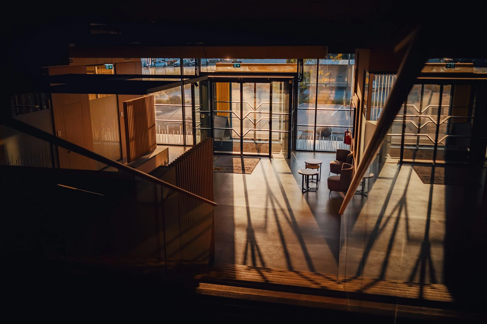
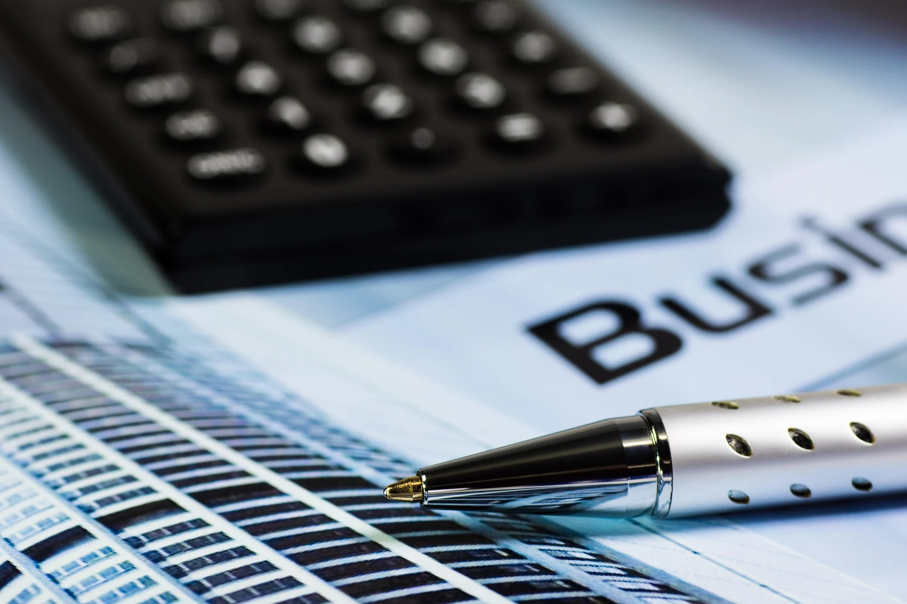
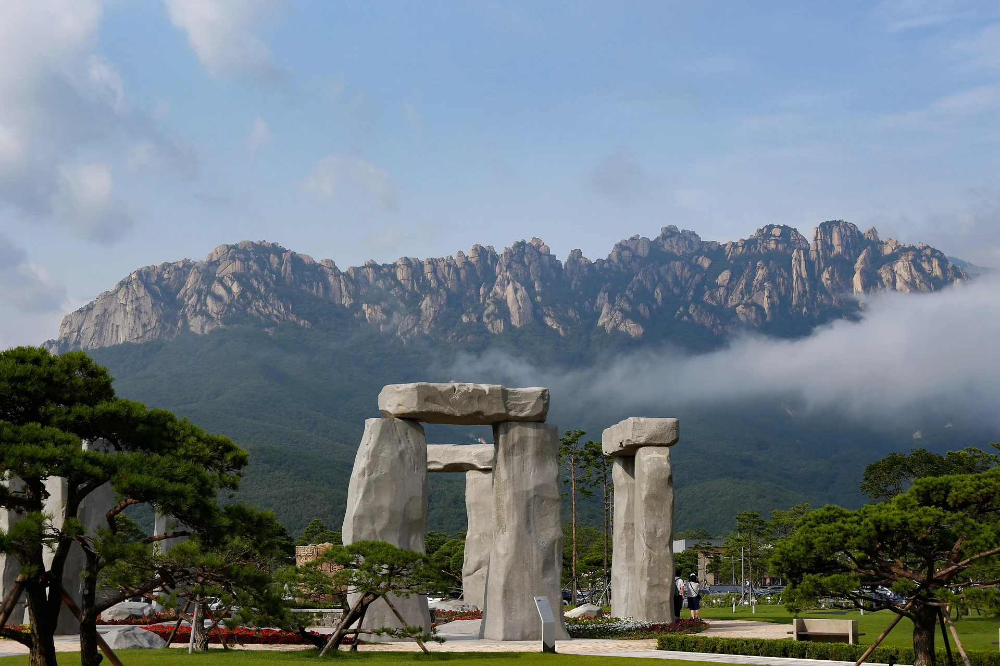

기업인증
벤처기업, 기업부설연구소·연구개발전담부서, 메인비즈·이노비즈 등
기업의 성장 단계에 필요한 인증을 검토합니다.
SUSTAINABLE STRATEGY & BUSINESS PARTNERS
기업의 현재를 정확히 진단하고,
성장 단계에 필요한 제도와 실행 전략을 연결합니다.
OUR PHILOSOPHY
기업에 필요한 것은
더 많은 정보가 아니라
올바른 방향과 순서입니다.
인증, 자금, R&D, 세제지원은 따로 떨어진 업무가 아닙니다.
기업의 현재와 다음 단계를 함께 보고 우선순위를 설계합니다.


OUR BUSINESS
필요한 제도를 단순히 나열하지 않고,
업력·매출·기술·인력·성장계획을 기준으로 우선순위를 설계합니다.
벤처기업, 기업부설연구소·연구개발전담부서, 메인비즈·이노비즈 등
기업의 성장 단계에 필요한 인증을 검토합니다.
기술성과 사업화 계획을 기준으로 지원사업을 탐색하고
연구개발 로드맵과 사업계획의 준비 방향을 설계합니다.
업력, 재무, 신용, 기존 보증과 자금 현황을 분석해
정책금융 및 보증제도의 적용 가능성을 검토합니다.
연구개발, 인력, 기업 형태와 연계 가능한 세제지원 항목을 점검하고
필요한 전문가 협업 영역을 구분합니다.
FOUNDER / REPRESENTATIVE CONSULTANT
FOUNDER MESSAGE
“제도 하나를 권하는 것이 아니라,
기업이 지금 무엇부터 준비해야 하는지를 함께 보겠습니다.”
HOW WE WORK
기업마다 필요한 제도와 시기가 다르기 때문에
현재 상태를 먼저 파악한 뒤,
적용 가능한 선택지를 좁혀갑니다.
업력, 매출, 인력, 기술, 신용 및 향후 계획을
확인합니다.
기업에 적용 가능한
인증·자금·지원사업을 선별합니다.
지원 시기와 준비 기간을 고려해
실행 순서를 설계합니다.
필요 자료와 사업계획,
신청 단계의 실무 준비를 지원합니다.
INSIGHT
UPDATE 준비중
